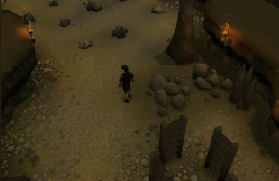
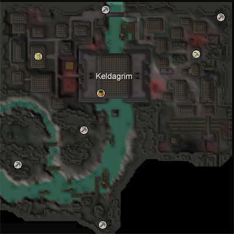
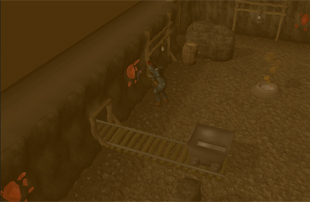
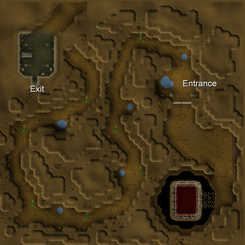
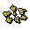

")
Mining - Extra Features
Dwarven Stout and Braindeath 'Rum'
| Summoning Familiars | Random Events
| Dwarven Mine
The Mining Guild | Living Rock Caverns | Keldagrim's Mining Sites | Witchaven Rubium Mine | Shooting Stars
Locators | Barbarian Assault Double XP | Coal Bag | Dungeoneering | Quests
The Mining Guild | Living Rock Caverns | Keldagrim's Mining Sites | Witchaven Rubium Mine | Shooting Stars
Locators | Barbarian Assault Double XP | Coal Bag | Dungeoneering | Quests
Dwarven Stout and Braindeath 'Rum'
 Dwarven Stout is an alcoholic beverage concocted by the dwarves but can be made by players using the brewing method. This drink temporarily increases your Mining and Smithing levels by one. You will find that by drinking this you will temporarily decrease your Attack, Defence and Strength levels by seven. Mature Dwarven Stout is randomly made when you attempt to brew Dwarven Stout. This drink temporarily increases your Mining and Smithing levels by two, but like Dwarven Stout, you will find that drinking this temporarily decreases your Attack, Defence and Strength levels by seven.
Dwarven Stout is an alcoholic beverage concocted by the dwarves but can be made by players using the brewing method. This drink temporarily increases your Mining and Smithing levels by one. You will find that by drinking this you will temporarily decrease your Attack, Defence and Strength levels by seven. Mature Dwarven Stout is randomly made when you attempt to brew Dwarven Stout. This drink temporarily increases your Mining and Smithing levels by two, but like Dwarven Stout, you will find that drinking this temporarily decreases your Attack, Defence and Strength levels by seven.
Braindeath 'Rum' is another drink that you may find useful while Mining. When you drink Braindeath 'Rum' it will temporarily increase your Mining and Strength levels. The amount that your skills rise depends on your stats. Like Dwarven Stout, Braindeath 'Rum' will also decrease some skill levels, such as Attack, Defence, Agility, Prayer, Herblore, Magic and Ranged temporarily.
Summoning Familiars
Using the Summoning skill, you'll find that there are a few familiars that might be useful for training your Mining. Of particular note is the desert wyrm, who not only boosts your Mining level, but can be sent off to find ores buried beneath the ground.
Random Events
For a list of random events that occur when mining, please refer to the Random Events section of the Manual.
Dwarven Mine

Please note that the Mining shop icon will not be visible on the main map, because the locations of the shops are underground. To view the item on your minimap you will have to be underground and within range of the shops. These will be in the Dwarven Mine and Keldagrim.
The Dwarven Mine contains shops, ores to mine from, anvils and a lot of dwarves. The Mining shops of the Dwarven Mine offer a range of supplies for Smithing and Mining, and the oppportunity to make money from this skill. You can do this by selling your mined ores or smithed bars to Drogo's Mining Emporium.

The Mining Guild

Inside this guild, you can mine a variety of rocks including many coal rocks and mithril. With the Dwarven Mine a door away, you also have the opportunity to mine from the coal, gold, adamantite, mithril, iron, copper, clay and tin rocks there.
You will also find the various tools that spawn and that are dropped by the dwarves in the mine useful. If you head through the door to the Dwarven Mine, you will also find an anvil to smith items from your newly mined ore (provided they have been smelted into bars first) and a few shops to buy Mining and Smithing tools from.
A necklace of skills will teleport you directly to the guild.
Living Rock Caverns

The creatures, once defeated, crumple into rock formations akin to the caverns themselves. A skilled miner can then quickly give the remains a scrape with their pickaxe, nabbing some living minerals in the process. These minerals can be used as bait to catch the highly prized rocktail fish, found in the freshwater pools in these caverns.
The concentrated mineral deposits are also worthy of note. Unlike typical mining sites, these deposits can be continuously mined until they collapse, sometimes even netting a miner two ores at the same time. These deposits are almost constantly shifting and are densely packed. As such, for a miner to obtain viable ores from them requires a higher Mining level than is required for mining their equivalents from rocks. In these caverns, you can find concentrated deposits of coal and gold.
Keldagrim's Mining Sites

Before you cross the river and get to the city, you can walk to the east to find a site containing copper and coal rocks.
Alternatively, talk to the ferryman and he will take you across the river to two other sites, one to the west and one to the east of the bridges. The western site contains iron rocks and the eastern site contains tin rocks. Talk to him again and he will take you back to the tunnel entrance.
By talking to the boatman you can travel down the river to the centre of Keldagrim. In the city there is a Mining shop selling pickaxes from bronze to rune, a furnace, anvils, a general store to sell your mined items and a bank if you wish to store some items. In the north-west of the city you will also find a Mining site containing coal rocks, and in the north you will find a mining spot by the river with gold, adamantite and runite seams (this site is only accessible to those who have completed Forgiveness of a Chaos Dwarf).

Witchaven Rubium Mine
After completing the Kennith's Concerns quest, you'll gain access to a rubium mine beneath Witchaven. To reach the mine, head down into the shrine, through the secret door and through the caverns to the mine area.

Rubium can be sold to your friend, Ezekial Lovecraft, in Witchaven's Fishing shop. Ezekial is stockpiling the stuff for his 'plan'. Rubium is also very useful in the creation of super fishing explosives (what with being the secondary ingredient and all). These souped-up versions of the normal fishing explosive can be used to lure mogres (at Mudskipper Point) and cause 15 damage to them at the same time - very useful for mogre Slayer tasks.

Shooting Stars
 Shooting stars fall across RuneScape with some regularity and bring great rewards for dedicated miners. Aside from the excellent training opportunities they provide, you can also earn some items add some interest to your training. Click here to read more about shooting stars.
Locators
 To get to your Mining areas quicker, you might want to consider purchasing a locator. These can be bought using reward credits in Mobilising Armies. Each officer of the officer tower can offer you a different level of locator.
To get to your Mining areas quicker, you might want to consider purchasing a locator. These can be bought using reward credits in Mobilising Armies. Each officer of the officer tower can offer you a different level of locator.
By using the locator, you can choose to be teleported to a Mining, Woodcutting, Fishing or Herblore secondary ingredient area. Once you have made your choice, the locator will make some mysterious calculations and then teleport you randomly to a suitable spot. Try not to be wasteful: the locators have a limited number of charges and can only be refreshed by buying another or playing a game of Mobilising Armies.
Barbarian Assault Double XP
It is possible to get double XP when mining ores. Travel to Barbarian Assault and talk to Commander Connad to receive a penance horn; this can be charged by playing waves of the activity, as long as you ensure that the switch in the waiting room is changed to 'XP'. With charges on the horn, you will automatically receive double XP when mining ores. You can then 'check-potential' the horn at any time to find out how many charges remain on it.
Coal Bag
A coal bag can be bought from the rewards trader of Daemonheim for dungeoneering tokens. This bag proves invaluable if you are making runs from coal mines to a bank, or if you are transferring coal from the coal trucks to the Seers' Village bank. The coal bag can hold up to 27 pieces of coal. When smithing or superheating, coal in the bag will be used before the coal in your inventory.
Mining Training in Dungeoneering
It is possible to train all of your skills while dungeoneering, and Mining is no exception. Occasionally you will find veins of ore within Daemonheim, and these can be mined with a pickaxe. You can also gain Mining experience by completing mining skill doors.
- To find out more about skill doors and the basics of dungeoneering, please click here
- To find out about mining ores in Daemonheim, click here
- To find tables with mining requirements and XP levels, click here
Quests Giving Mining Experience
To view quests that reward you with Mining experience please see the Mining Rewards page.
Click here to view the Mining FAQs

More articles in
Mining
|
|
|
Further Help
If this article does not help you, you may find the following sections of the RuneScape site helpful:
|
|